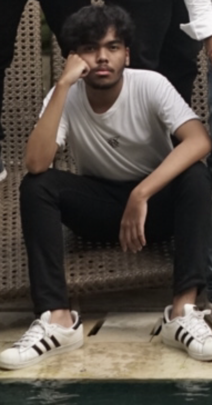

Hello all I am
RIZAL ALI
Halo, perkenalkan nama saya Rizal Ali Mansyur Badaraf saya lahir di Denpasar Bali pada tanggal 04 Oktober 2003. saya berumur 20 tahun. Saat ini saya berstatus sebagai mahasiswa aktif di ITB STIKOM BALI.

Saya adalah seorang pelajar yang penuh semangat dengan minat yang beragam. Salah satu passion saya adalah dalam bidang fotografi, di mana saya menemukan keindahan dalam memotret momen-momen berharga dalam kehidupan. Selain itu, saya juga tertarik dalam videografi, di mana saya dapat menyalurkan kreativitas saya melalui pembuatan film pendek dan video. Di samping itu, saya juga menyukai bermain game, baik itu game online maupun offline. Saya melihat game sebagai cara untuk bersantai dan menghibur diri.
Bermain game dapat memberikan saya kesenangan dan hiburan, serta memenuhi kebutuhan saya akan tantangan dan pemecahan masalah. Game sering kali menawarkan lingkungan yang imersif di mana saya dapat berinteraksi dengan dunia virtual, mengembangkan keterampilan strategi, reaksi, dan kerja sama tim.
Saya menyukai fotografi karena itu memberi saya kesempatan untuk menangkap momen-momen indah dalam hidup, serta untuk mengekspresikan kreativitas saya melalui gambar. Aktivitas ini juga memberi saya kesempatan untuk melihat dunia dari sudut pandang yang berbeda dan menemukan keindahan di sekitar saya.
Videografi sangat menarik bagi saya karena memberikan saya kesempatan untuk menciptakan karya visual yang dinamis dan menarik. Saya melihat videografi sebagai seni yang memungkinkan saya untuk menciptakan karya visual yang tidak hanya dinamis dan menarik, tetapi juga memiliki kekuatan untuk menyampaikan pesan-pesan emosional dan naratif yang mendalam.
Menjadi siswa magang di bidang fotografi
Menjadi sie humas pada event salah satu UKM di kampus
Menjadi sie humas pada event salah satu UKM di kampus
Soft skill & Hard skill yang saya miliki
Saya sangat terbuka untuk berdiskusi lebih lanjut. Jangan ragu untuk menghubungi saya. Terima kasih atas perhatiannya.